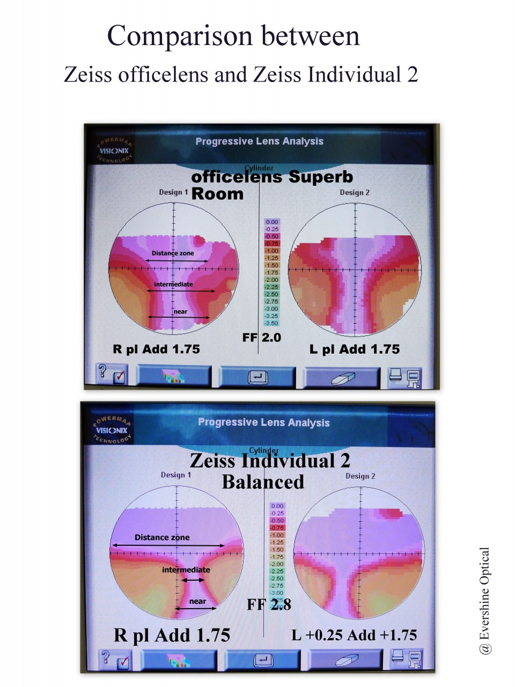

บทนำ: ปัญหาที่เริ่มจากคอมพิวเตอร์
ไม่ใช่ทุกครั้งที่สายตาเปลี่ยน — บางที ปัญหาอยู่ที่ Design ของเลนส์Progressive lens มีหลาย design: General, Office, Workspace, Computer lens — แต่ละแบบถูกออกแบบมาสำหรับช่วงระยะมองที่ต่างกัน ที่ไม่ถูก Optimize สำหรับการใช้งานจริงต่างหาก
บทความนี้นำเสนอเคสจริงจากผู้ใช้ที่ใช้ Progressive Lens มาตลอด แต่เมื่อ Addition เพิ่มจาก 1.50 ขึ้นไปถึง 2.00 — เธอเริ่มปวดคออย่างหนักเพราะต้องเงยหน้าตลอด สัญญาณเตือนก็เริ่มปรากฏ
📋 ข้อมูลเคส: Mrs. N
ผู้ใช้แว่น Progressive ที่มาพบด้วยอาการ ปวดคอ เพราะต้องเงยหน้ามองผ่านโซนล่างของเลนส์ตลอด — เมื่อ Addition สูงถึง 1.50–2.00 แว่น Progressive ตัวเดียวไม่พอแล้ว
อาการที่พบ: สัญญาณที่ร่างกายส่งมา
เมื่อ Mrs. N กลับมาพบครั้งที่สอง เธอ complain เรื่อง ปวดคอ เพราะต้องเงยหน้าขึ้นตลอดเวลาเพื่อมองผ่านโซนล่างของเลนส์ — ซึ่งผมได้ เตือนล่วงหน้าไว้แล้ว 1 ปีก่อน ว่าเมื่อ Addition สูงขึ้น อาการเหล่านี้จะตามมา:
- 1ภาพหน้าจอคอมพิวเตอร์ ไม่ค่อยชัด ต้องปรับระยะตาบ่อยขึ้น
- 2ต้อง เงยหน้าขึ้นสูงกว่าเดิม เพื่อหา Focus Point ที่ชัด
- 3ปวดคอ-บ่า หลังทำงานหน้าจอนาน เนื่องจากท่าทางผิดปกติสะสม
- 4การมองระยะไกล (ขับรถ, Google Maps) ยังปกติดี — ปัญหาจำกัดเฉพาะระยะ Near/Intermediate
Note สำคัญ: อาการ "ต้องเงยหน้าขึ้นมากขึ้น" เป็นสัญญาณคลาสสิกว่า Near Zoneบริเวณ Lower portion ของ Progressive lens ที่ถูกออกแบบไว้สำหรับมองระยะใกล้ เช่น หนังสือหรือมือถือ มี Power ที่สูงที่สุดในเลนส์ ของ Progressive กำลัง "ไม่พอแล้ว" สำหรับระยะการทำงานในชีวิตจริง
การวิเคราะห์: ทำไมถึงเกิดขึ้น?
ผมจับวัดสายตาใหม่ทันที — ผลปรากฏว่า ค่าสายตาเพิ่มขึ้นนิดหน่อย แต่ยังไม่เข้า Band ที่ต้องตัดแว่นตัวใหม่ โจทย์จริงไม่ใช่ค่าสายตา แต่คือ ขนาดและคุณภาพของ Near Zone
"ปัญหาของ General Progressive คือ Near Zone มักแคบเกินไปสำหรับคนที่ต้องอ่าน Spreadsheet ทั้งวัน — ตาต้องเบี่ยงหาโซนอยู่ตลอด ทำให้กล้ามเนื้อคอ-บ่าทำงานหนักโดยไม่รู้ตัว"
เมื่อ Addition Powerค่า Add คือกำลังเลนส์ที่เพิ่มขึ้นสำหรับการมองระยะใกล้ใน Progressive lens เช่น Add +1.50, +1.75, +2.00 — ยิ่งสูง ยิ่งช่วยมองใกล้ได้ดีขึ้น แต่ก็ทำให้ Near Zone แคบลง ของ General Progressive เพิ่มขึ้นจาก Add 1.50 ถึง 2.00 — พื้นที่ Near Zone ที่มีอยู่แล้วไม่กว้างมากก็จะยิ่งแคบลงไปอีก ผลคือต้องเงยหน้าขึ้นสูงกว่าเดิมเพื่อหาจุด Focus ทำให้ปวดคออย่างหนัก และการมอง Spreadsheet แบบ Multi-column กลายเป็นเรื่องที่ตาต้องทำงานหนัก
ภาพจาก Lens Analysis: เห็นชัดด้วยตาเปล่า
ภาพ Visionix PowerMap แสดงให้เห็นความแตกต่างได้ชัดเจนมาก ระหว่าง Zeiss OfficeLens Superb Room และ Zeiss Individual 2 Balanced:

ภาพ: © Evershine Optical Singapore
| Zone | General Progressive (Zeiss Individual 2) | Office Lens (Zeiss OfficeLens) |
|---|---|---|
| Distance Zone | ✓ กว้าง, ใช้ได้ดี | △ แคบลง (Tradeoff) |
| Intermediate Zone (Monitor ~60–80cm) |
△ ปานกลาง | ✓✓ กว้างมาก |
| Near Zone (Desk, Spreadsheet) |
△ แคบ, ต้องเงยคอ | ✓✓ กว้าง, สบายตา |
| FF (Fitting Factor) | 2.8 (สูง = distortion มากกว่า) | 2.0 (ต่ำ = distortion น้อยกว่า) |
| Swaying/Waiving Effect | มีเห็นได้ชัดขณะขยับหัว | น้อยมาก สบายตากว่า |
ทางออก: Shamir Computer & Workspace Lens
ผมแนะนำให้ Mrs. N ทดลอง Shamir Computer & Workspace Lensเลนส์ Progressive สำหรับงาน Office โดยเฉพาะ มี 2 รุ่นหลัก: "Computer" เน้น Monitor Distance และ "Workspace" ครอบคลุม Near + Intermediate ได้กว้างขึ้น ทั้ง 2 รุ่น:
- AShamir Computer: เน้นระยะ Monitor เป็นหลัก (~60–80 cm) เหมาะกับงานที่จ้องหน้าจอเดียวนาน ๆ
- BShamir Workspace: ครอบคลุมระยะ Desk + Monitor + ห้องทำงาน (1–2 เมตร) กว้างกว่า — Mrs. N เลือกรุ่นนี้
เหตุที่ Mrs. N ชอบ Workspace มากกว่า เนื่องจาก Waiving/Swaying Effectอาการภาพ "โยก" หรือ "เบี้ยว" เมื่อขยับหัวหรือเดิน เป็นผลมาจาก Peripheral Distortion ของ Progressive lens ยิ่ง FF สูง ยิ่งรู้สึกโยกมาก ต่ำมาก ทำให้สวมใส่สบาย ไม่เวียนศีรษะ และพื้นที่มองเห็น Spreadsheet กว้างกว่าเดิมอย่างมีนัยสำคัญ
"ผมบอก Mrs. N ตั้งแต่แรกว่า — ถ้าวันไหนทำงานนาน อาจต้องพิจารณา Office Lens ไว้สักตัว และวันนั้นก็มาถึงแล้ว"
บทสรุป: Progressive Lens ยังดีอยู่ แต่ต้องรู้ขอบเขตมัน


Mrs. N ยังใช้ General Progressive เดิมสำหรับชีวิตประจำวัน ขับรถ เดิน ดู Maps — ไม่มีปัญหาอะไรเลย แต่เพิ่ม Office Lens ตัวที่สองสำหรับนั่งทำงานโดยเฉพาะ ผลลัพธ์คือ คอไม่ปวดอีกแล้ว ภาพ Spreadsheet กว้างขึ้นชัดขึ้น และทำงานได้นานขึ้นโดยไม่เมื่อยตา
ถ้าคุณมีอาการเหมือนกัน — เงยคอมากขึ้น, ปวดบ่า, ภาพคอมแคบลง — นั่นไม่ใช่สายตาเสียเสมอไป บางทีแค่ต้องการ เครื่องมือที่ถูกออกแบบมาสำหรับงานนั้นโดยเฉพาะ
Q&A: คำถามที่ถามบ่อย
Shamir Workspace ครอบคลุมระยะที่กว้างกว่า ตั้งแต่งาน Desk ระยะใกล้จนถึงห้องทำงาน ~1.5–2 เมตร เหมาะกับผู้ที่ต้องมองทั้ง Documents บนโต๊ะ + Monitor + พูดคุยกับเพื่อนร่วมงานในห้อง
ในภาพที่เห็น OfficeLens มี FF 2.0 ขณะที่ Zeiss Individual 2 มี FF 2.8 — นั่นหมายความว่า OfficeLens มีพื้นที่ Distortion น้อยกว่า ทำให้ตาสบายกว่าเมื่อต้องจ้องนาน ๆ